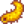
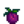

요리
- 요리 수집 완성에 대한 내용은, 수집품#요리 참고.
요리는 농가를 처음 업그레이드 한 후에 이용할 수 있는 기능입니다. 집을 업그레이드하면 가스레인지와 냉장고가 포함된 주방이 추가됩니다. 가스레인지는 요리창을 제공하고 냉장고는 보관함와 같이 36칸의 보관 공간을 제공합니다. 냉장고는 플레이어의 인벤토리가 확장된 것처럼 요리 화면과 연결됩니다. 플레이어의 인벤토리와 냉장고의 재료 중 레시피에 사용가능한 아이템들이 표시됩니다.
채집 레벨 9에 도달한 후 플레이어는 야외 요리 키트를 사용하여 언제 어디에서나 요리할 수 있습니다.
처음 요리를 시작할 때, 계란 프라이를 제외하고 나머지 요리를 하려면 레시피를 배워야합니다. 긴 레시피는 검은 실루엣으로 표시되고 말풍선에는 "???"라고 적혀있습니다. 재료가 부족할 때는 해금한 레시피가 회색으로 표시되지만 말풍선에 레시피에 관한 정보가 적혀있습니다. 부족한 재료는 붉은 색으로 강조가 됩니다. 만약 모든 재료가 플레이어의 인벤토리나 냉장고(혹은 두곳 합쳐서)에 전부 있을 경우 레시피 아이콘이 완전히 강조됩니다.
상태 효과
음식 버프는 한 개씩만 적용되기 때문에, 버프가 있는 음식을 먹으면 그전에 적용 중이던 음식 버프는 사라지고 새로 먹은 음식 버프로 대체됩니다. 새로 먹은 음식에 버프가 없다면, 기존 버프는 유지됩니다. 음료 버프는 별개로 적용되기 때문에, 음식 버프 1개에 음료(트리플 샷 에스프레소, 커피, 녹차, 진저 에일) 버프 1개를 중첩할 수 있습니다.
음식과 음료마다 상태 효과 지속 시간이 다릅니다.(아래 표 참조[1]) 그러나 오징어 먹물 라비올리를 제외한 모든 음식과 음료의 상태 효과는 동일합니다. 치의 양념을 사용하면 지속 시간이 50% 증가합니다.
업적
요리와 관련된 업적이 3개 있습니다:
- 요리사(10가지 요리 만들기)
- 수셰프(25가지 요리 만들기)
- 미식가 셰프(모든 요리 만들기)
치의 양념
치의 호두 방에서 10개 묶음을  10으로 구입할 수 있는 치의 양념은 음식을 금별 품질로 만들어주고, 회복량은 80%, 판매가는 50%로 증가시켜 줍니다. 또한 버프 효과도 한단계 증가합니다(속도 버프 제외). 예를 들어, 바다 거품 푸딩을 치의 양념을 더해 요리하면 낚시 버프가 +4에서 +5로 증가합니다. 이 양념은 인벤토리나 냉장고, 혹은 미니-냉장고에 있는 경우 요리할 때 자동으로 사용됩니다. 양념을 전부 소진하면, "치의 양념을 모두 소진했습니다."라는 문구가 왼쪽 하단에 알림이 나옵니다.
10으로 구입할 수 있는 치의 양념은 음식을 금별 품질로 만들어주고, 회복량은 80%, 판매가는 50%로 증가시켜 줍니다. 또한 버프 효과도 한단계 증가합니다(속도 버프 제외). 예를 들어, 바다 거품 푸딩을 치의 양념을 더해 요리하면 낚시 버프가 +4에서 +5로 증가합니다. 이 양념은 인벤토리나 냉장고, 혹은 미니-냉장고에 있는 경우 요리할 때 자동으로 사용됩니다. 양념을 전부 소진하면, "치의 양념을 모두 소진했습니다."라는 문구가 왼쪽 하단에 알림이 나옵니다.
레시피
| 사진 | 이름 | 설명 | 재료 | 기력 / 체력 | 상태 효과 | 효과 지속시간 | 레시피 획득처 | 판매가격 | |||
|---|---|---|---|---|---|---|---|---|---|---|---|
| 계란 프라이 | 한쪽만 익힌 계란 프라이. | 해당 없음 | 해당 없음 | 농가 업그레이드 | |||||||
| 오믈렛 | 매우 푹신푹신합니다. | 해당 없음 | 해당 없음 |
|
|||||||
| 샐러드 | 건강한 야채샐러드 | 해당 없음 | 해당 없음 |
|
|||||||
| 치즈 콜리플라워 | 냄새가 너무 좋습니다! | 해당 없음 | 해당 없음 |
|
|||||||
| 생선구이 | 허브를 깔고 구운 생선. | 해당 없음 | 해당 없음 |
|
|||||||
| 설탕당근 스프 | 신선하고 든든합니다. | 해당 없음 | 해당 없음 |
|
|||||||
| 야채의 메들리 | 영양분이 아주 많습니다. | 해당 없음 | 해당 없음 |
|
|||||||
| 완벽한 아침 | 세상 모든 일을 해낼 수 있을 것 같은 기분입니다! |
|
|||||||||
| 오징어튀김 | 너무 쫄깃쫄깃합니다. | 해당 없음 | 해당 없음 |
|
|||||||
| 수상한 롤 | 안에 무엇이 들었을까? | 해당 없음 | 해당 없음 |
|
|||||||
| 행운의 점심 | 특별한 작은 식사. |  해삼 (1) |
|
||||||||
| 버섯구이 | 진한 대지의 향기가 납니다. |
|
|||||||||
| 피자 | 여러 가지 타당한 이유로 인기있는 음식. | 해당 없음 | 해당 없음 |
|
|||||||
| 콩 스튜 | 확실히 건강한 음식입니다. |
|
|||||||||
| 맛탕 | 달콤하고 만족스럽습니다... 설탕에서 캐러멜의 향이 납니다. | 해당 없음 | 해당 없음 |
|
|||||||
| 깜짝잉어 | 기름지고 별다른 맛은 없습니다. | 해당 없음 | 해당 없음 |
|
|||||||
| 해시브라운 | 바삭하고 황금빛 도는 갈색입니다! |
|
|||||||||
| 팬케이크 | 폭신하고 부드러운 팬케이크 두개. |
|
|||||||||
| 연어 정찬 | 레몬을 뿌려서 특별하게 즐기세요. | 해당 없음 | 해당 없음 |
|
|||||||
| 생선 타코 | 맛있는 향이 납니다. |
|
|||||||||
| 우럭 튀김 | 와우, 브레딩이 완벽합니다. |
|
|||||||||
| 페퍼 파퍼 | 치즈로 채운 매콤한 피망을 브레딩 한 요리. |
|
|||||||||
| 빵 | 껍질이 딱딱한 바게트 | 해당 없음 | 해당 없음 |
|
|||||||
| 똠카 스프 | 믿을 수 없는 맛입니다! |
|
|||||||||
| 송어 스프 | 꽤 짭니다. |
|
|||||||||
| 초콜릿 케이크 | 진하고 촉촉하고, 두꺼운 퍼지 아이싱이 올라가 있습니다. | 해당 없음 | 해당 없음 |
|
|||||||
| 핑크 케이크 | 작은 하트 모양 사탕이 올려져 있습니다. | 해당 없음 | 해당 없음 |
|
|||||||
| 대황 파이 | 으음, 톡 쏘는 단맛! | 해당 없음 | 해당 없음 |
|
|||||||
| 쿠키 | 쫀득쫀득합니다. | 해당 없음 | 해당 없음 |
|
|||||||
| 스파게티 | 예로부터 많이들 좋아한 요리. | 해당 없음 | 해당 없음 |
|
|||||||
| 장어튀김 | 기름지지만 향이 깊습니다. |
|
|||||||||
| 매콤한 장어 | 정말 맵습니다! 조심하세요. |
|
|||||||||
| 회 | 얇게 뜬 날 생선. | 해당 없음 | 해당 없음 |
|
|||||||
| 마키 롤 | 생선과 쌀을 해초로 감싸서 만든 요리. | 해당 없음 | 해당 없음 |
|
|||||||
| 또띠아 | 다른 음식을 담거나 따로 먹을 수도 있습니다. | 해당 없음 | 해당 없음 |
|
|||||||
| 붉은 정식 | 항산화물질이 가득합니다. |
|
|||||||||
| 가지 파마산 | 톡 쏘는 치즈 향이 훌륭합니다. |
|
|||||||||
| 라이스 푸딩 | 크림 같고 달달하고 먹는 재미가 있습니다. | 해당 없음 | 해당 없음 |
|
|||||||
| 아이스크림 | 이건 싫어하는 사람이 거의 없습니다. | 해당 없음 | 해당 없음 |
|
|||||||
| 블루베리 타르트 | 은은하고 상큼합니다. | 해당 없음 | 해당 없음 |
|
|||||||
| 가을의 수확 | 한 계절의 풍미. |
|
|||||||||
| 호박죽 | 인기 있는 계절메뉴. |
|
|||||||||
| 슈퍼 건강식 | 원기보충하기 딱 좋은 식사. |
|
|||||||||
| 크랜베리 소스 | 축제 기간의 별미. |
|
|||||||||
| 요리용 속 | 아아... 따뜻한 빵과 세이지 향기. |
|
|||||||||
| 농부의 점심 | 이거면 계속 일할 수 있습니다. | ||||||||||
| 생존형 버거 | 탐험가를 위한 간편한 간식. | ||||||||||
| 바다의 요리 | 찬 바닷바람에도 당신을 따뜻하게 해줍니다. | ||||||||||
| 광부의 간식 | 이것으로 에너지를 유지할 수 있습니다. | ||||||||||
| 뿌리채소 모음 | 더 먹기위해 땅을 파게 만드는 맛. | ||||||||||
| 트리플 샷 에스프레소 | 일반 커피보다 강력합니다! | ||||||||||
| 바다 거품 푸딩 | 이 거친 푸딩은 당신을 해상 사고 방식으로 이끌 것입니다! | ||||||||||
| 녹조류 스프 | 좀 끈적끈적합니다. | 해당 없음 | 해당 없음 |
|
|||||||
| 창백한 죽 | 유황 냄새가 살짝 나는 미묘한 죽입니다. | 해당 없음 | 해당 없음 |
|
|||||||
| 자두 푸딩 | 축제 기간의 전통적인 간식. |  야생 자두 (2) |
해당 없음 | 해당 없음 |
|
||||||
| 아티초크 소스 | 시원하고 신선합니다. | 해당 없음 | 해당 없음 |
|
|||||||
| 야채 볶음 | 흰쌀밥 위에 얹은 잘게 썰은 야채 모음. | 해당 없음 | 해당 없음 |
|
|||||||
| 구운 헤이즐넛 | 굽는 과정 덕분에 진한 숲의 맛이 납니다. | 해당 없음 | 해당 없음 |
|
|||||||
| 호박 파이 | 쉽게 부서지는 껍질 속에 든 부드러운 호박 크림. | 해당 없음 | 해당 없음 |
|
|||||||
| 무 샐러드 | 무가 무척 아삭합니다! | 해당 없음 | 해당 없음 |
|
|||||||
| 과일 샐러드 | 여름 과일의 맛있는 조합. | 해당 없음 | 해당 없음 |
|
|||||||
| 블랙베리 코블러 | 이거만 한 게 없습니다. | 해당 없음 | 해당 없음 |
|
|||||||
| 크랜베리 캔디 | 과일 특유의 쓴맛을 가릴 만큼 달콤합니다. | 해당 없음 | 해당 없음 |
|
|||||||
| 브루쉐타 | 바삭한 흰 빵 위에 올린 익힌 토마토. | 해당 없음 | 해당 없음 |
|
|||||||
| 코울슬로 | 가볍고, 신선하고, 아주 건강한 음식. | 해당 없음 | 해당 없음 |
|
|||||||
| 청나래고사리 리조또 | 기름에 데친 고사리와 함께 먹는 크리미한 쌀 요리. 약간 맛이 밋밋합니다. | 해당 없음 | 해당 없음 |
|
|||||||
| 양귀비씨 머핀 | 마음을 진정시키는 효과가 있습니다. | 해당 없음 | 해당 없음 |
|
|||||||
| 차우더 | 바다에서 추운 밤을 보낸 뒤 몸을 데우는 데 안성맞춤입니다. |
|
|||||||||
| 생선 스튜 | 바다 냄새가 많이 납니다. 그래도, 냄새보단 맛있습니다. |
|
|||||||||
| 에스카르고 | 완벽하게 조리된 버터에 절인 달팽이. |
|
|||||||||
| 가재 비스크 | 이 우아한 스프는 윌리네 가족의 비밀 레시피입니다. |
|
|||||||||
| 메이플 바 | 두껍게 메이플을 발라서 광택이 나는 달콤한 도넛입니다. |
|
|||||||||
| 게살 케이크 | 게살, 빵가루, 계란으로 반죽을 한 뒤 황금빛 갈색이 되도록 구워낸 요리. |
|
|||||||||
| 새우 칵테일 | 갓 잡은 새우로 만든 호화로운 전채요리. |
|
|||||||||
| 진저 에일 | 속을 진정시키는 효과가 있는 톡 쏘는 맛의 탄산음료. | 진저 섬 화산의 드워프 가게 ( |
|||||||||
| 바나나 푸딩 | 환상적인 열대의 맛을 담은 크림 디저트. |
|
|||||||||
| 카오 니야우 마무앙 | 달콤한 망고와 코코넛으로 맛을 낸 정말 특별한 쌀 요리. |
|
|||||||||
| 포이 | 갓 만들어 먹으면 우아한 단맛이 나는 전통음식. | 해당 없음 | 해당 없음 |
|
|||||||
| 열대 카레 | 파인애플로 만든 접시에 담아 먹는 이국적이고 향긋한 카레. | ||||||||||
| 오징어 먹물 라비올리 | 디버프 효과를 방지합니다. |
재료
게임 내에 있는 74가지의 모든 요리를 만들려면 최소 82가지의 재료가 필요합니다. 필요한 재료는 아래와 같습니다:
- 26가지의 작물 생산품
- 13가지의 채집물
- 4가지의 과일나무 열매
- 2가지의 동물 생산품
- 4가지의 장인 생산품
- 2가지의 잡다한 아이템(메이플 시럽, 오징어 먹물)
- 낚시로 얻는 아이템 17가지
- 게잡이 통발로 잡는 8가지 아이템
- 피에르네 잡화점에서 판매하는 아이템 5가지
- 요리 재료로 쓰는 요리 6가지
이 표는 다른 요리를 만들기 위해 제작한 요리를 사용하는 것도 고려되어 있습니다. 예를 들어 해시브라운을 만드는데 감자 1개가 사용되고 완벽한 아침을 만드는데 해시브라운이 사용됩니다. 그리고 바다의 요리을 만들기 위해 해시브라운을 만들 감자가 1개 더 필요합니다. 모든 요리를 제작하면 미식가 셰프 업적을 얻게 되지만 다른 요리를 제작하는데 사용했기 때문에 해시브라운은 남아있지 않게 됩니다.
작물
| 사진 | 이름 | 총 필요한 양 | 계절 | 성장 기간 | 비고 | 사용처 |
|---|---|---|---|---|---|---|
| 파스닙 | 2 | 봄 | 4일 | |||
| 케일 | 2 | 봄 | 6일 | 낫으로 수확 | ||
| 감자 | 2 | 봄 | 6일 | 20% 확률로 추가 수확 | ||
| 푸른 재즈 | 1 | 봄 | 7일 | |||
| 완두콩 | 2 | 봄 | 10일 | 격자를 따라 성장. 3일마다 생산. | ||
| 콜리플라워 | 1 | 봄 | 12일 | 거대 작물로 성장 가능 | ||
| 대황 | 1 | 봄 | 13일 | 오아시스에서 씨앗 구매가능 | ||
| 마늘 | 2 | 봄 | 4일 | 2년차부터 재배가능 | ||
| 매운 고추 | 2 | 여름 | 5일 | 3일마다 생산. | ||
| 무 | 2 | 여름 | 6일 | |||
| 양귀비 | 1 | 여름 | 7일 | |||
| 토마토 | 7 | 여름 | 11일 | 4일마다 생산. | ||
| 멜론 | 2 | 여름 | 12일 | 거대 작물로 성장 가능 | ||
| 블루베리 | 2 | 여름 | 13일 | 한번 수확에 여러 개의 블루베리 수확가능. 4일마다 생산. | ||
| 옥수수 | 2 | 여름/가을 | 14일 | 4일마다 생산. | ||
| 붉은 양배추 | 3 | 여름 | 9일 | 2년차부터 재배가능 | ||
| 청경채 | 1 | 가을 | 4일 | |||
| 가지 | 2 | 가을 | 5일 | 5일마다 생산. | ||
| 아마란스 | 1 | 가을 | 7일 | 낫으로 수확가능 | ||
| 크랜베리 | 4 | 가을 | 7일 | 한 번에 2개씩 수확. 5일마다 재생산. | ||
| 참마 | 2 | 가을 | 10일 | |||
| 호박 | 3 | 가을 | 13일 | 거대 작물로 성장 가능 | ||
| 사탕무 | 1 | 가을 | 6일 | 오아시스에서 구매가능 | ||
| 아티초크 | 2 | 가을 | 8일 | 2년차부터 재배가능 | ||
| 파인애플 | 1 | 여름 | 14 일 | |||
| 토란 | 4 | 여름 | 10 일 |
채집물
| 사진 | 이름 | 총 필요한 양 | 계절 | 채집 위치 | 사용처 |
|---|---|---|---|---|---|
| 블랙베리 | 2 | 가을 | 스타듀밸리 전체 | ||
| 동굴 당근 | 5 | 모든 계절 | 광산 | ||
| 흔한 버섯 | 3 | 봄/가을 | 스타듀밸리 전체 | ||
| 민들레 | 1 | 봄 | 스타듀밸리 전체 | ||
| 코코넛 | 1 | 모든 계절 | 칼리코 사막 | ||
| 청나래고사리 | 1 | 여름 | 비밀의 숲 | ||
| 헤이즐넛 | 4 | 가을 | 스타듀밸리 전체 | ||
| 야생 고추냉이 | 1 | 봄 | 스타듀밸리 전체 | ||
| 리크 | 1 | 봄 | 스타듀밸리 전체 | ||
| 곰보버섯 | 1 | 봄 | 농장 동굴, 비밀의 숲 | ||
| 야생 자두 | 2 | 가을 | 스타듀밸리 전체 | ||
| 겨울뿌리 | 1 | 겨울 | 스타듀밸리 전체, 광산 | ||
| 생강 | 3 | 모든 계절 | 진저 섬 곳곳, 호랑 슬라임 드랍 |
나무 열매
| 사진 | 이름 | 총 필요한 양 | 획득처 | 계절 | 사용처 |
|---|---|---|---|---|---|
| 사과 | 1 | 사과나무 | 가을 | ||
| 살구 | 1 | 살구나무 | 봄 | ||
| 바나나 | 1 | 바나나 나무 | 여름 | ||
| 망고 | 1 | 망고 나무 | 여름 |
동물 생산품
참고: 우유가 필요한 모든 레시피는 우유나 큰 우유를 사용할 수 있습니다. 염소젖이나 큰 염소젖은 어떤 레시피에도 사용할 수 없습니다.
달걀이 필요한 레시피에는 달걀, 오리알 모두 사용가능하며, 심지어 공허의 달걀도 가능합니다.
| 사진 | 이름 | 총 필요한 양 | 획득처 | 비고 | 사용처 |
|---|---|---|---|---|---|
| 달걀 | 8 | 닭 |
|||
| 우유 | 11 |  소 |
우유 들통으로 얻을 수 있습니다. |
장인 제작품
커피는 만든는 대신 주점에서  300골드에 구입할 수도 있습니다.
300골드에 구입할 수도 있습니다.
| 사진 | 이름 | 총 필요한 양 | 획득처 | 필요한 아이템 | 생산 소요시간 | 사용처 |
|---|---|---|---|---|---|---|
| 치즈 | 3 | 치즈 착제기 | 3.3시간 | |||
| 마요네즈 | 2 | 마요네즈 기계 | 3시간 | |||
| 공허 마요네즈 | 1 | 마요네즈 기계 | 3시간 | |||
| 커피 | 3 | 술통 | 2시간 |
기타
| 사진 | 이름 | 총 필요한 양 | 획득처 | 생산 소요시간 | 사용처 |
|---|---|---|---|---|---|
| 메이플 시럽 | 1 | 단풍 나무에 수액 채취기 | 7-8일 | ||
| 오징어 먹물 | 1 | 오징어 꼬마 드롭, 오징어 또는 자정오징어가 들어있는 물고기 연못 | 물고기 연못 안의 마리 수에 따라 나오는 아이템이 달라짐 |
생선
| 사진 | 이름 | 총 필요한 양 | 위치 | 시간 | 계절 | 계절 | 난이도 | 사용처 |
|---|---|---|---|---|---|---|---|---|
| 참치 | 1 | 바다 | 6am – 7pm | 여름/겨울 | 아무때나 | 70 | ||
| 정어리 | 2 | 바다 | 6am – 7pm | 봄/가을/겨울 | 아무때나 | 30 | ||
| 도미 | 1 | 강 | 6pm – 2am | 모든 계절 | 아무때나 | 35 | ||
| 큰입우럭 | 1 | 산의 강 | 6am – 7pm | 모든 계절 | 아무때나 | 50 | ||
| 무지개송어 | 1 | 강, 산의 강 | 6am – 7pm | 여름 | 45 | |||
| 연어 | 1 | 강 | 6am – 7pm | 가을 | 아무때나 | 50 | ||
| 가자미 | 1 | 바다 | 6am-8pm | 봄/여름 | 아무때나 | 50 | ||
| 자정 잉어 | 1 | 산의 강, 숲의 호수 | 10pm-2am | 가을/겨울 | 아무때나 | 55 | ||
| 잉어 | 4 | 산의 강, 숲의 호수, 하수도, 비밀의 숲, 돌연변이 곤충 둥지 | 아무때나 | 모든 계절 | 아무때나 | 15 | ||
| 개복치 | 1 | 강 | 6am – 7pm | 봄/여름 | 30 | |||
| 장어 | 2 | 바다 | 4pm – 2am | 봄/가을 | 70 | |||
| 오징어 | 1 | 바다 | 6pm – 2am | 겨울 | 아무때나 | 75 | ||
| 해삼 | 1 | 바다 | 6am – 7pm | 가을/겨울 | 아무때나 | 40 | ||
| 생선 (아무거나) | 2 | 모든 곳 | 아무때나 | 모든 계절 | 아무때나 | 해당없음 | ||
| 해초 | 1 | 바다 | 아무때나 | 모든 계절 | 아무때나 | 0 | ||
| 녹조류 | 5 | 농장 연못을 제외한 모든 곳 | 아무때나 | 모든 계절 | 아무때나 | 0 | ||
| 흰 조류 | 2 | 광산, 하수도, 돌연변이 곤충 둥지, 마녀의 늪 | 아무때나 | 모든 계절 | 아무때나 | 0 |
게잡이 통발 아이템
조개와 홍합은 아무 계절에나 해변에서 채집할 수 있습니다. 게는 광산의 바위 게나 용암 게가 드롭하기도 합니다.
| 사진 | 이름 | 총 필요한 양 | 위치 | 사용처 |
|---|---|---|---|---|
| 바닷가재 | 1 | 바다 | ||
| 조개 | 1 | 바다 | ||
| 민물가재 | 1 | 민물 | ||
| 게 | 1 | 바다 | ||
| 홍합 | 1 | 바다 | ||
| 새우 | 2 | 바다 | ||
| 달팽이 | 1 | 민물 | ||
| 충알고둥 | 2 | 민물 |
잡화점 아이템
| 사진 | 이름 | 총 필요한 양 | 개당 가격/총 가격 | 비고 | 사용처 |
|---|---|---|---|---|---|
| 설탕 | 16 | 100골드/1600골드
(재배하면 10골드/60골드) |
풍차에 사탕무를 넣어 만들 수 있습니다. | ||
| 밀가루 | 21 | 100골드/2100골드
(재배하면 5골드/105골드) |
풍차에 밀을 넣어 만들 수 있습니다. | ||
| 쌀 | 2 | 200골드/400골드
(재배하면 100골드/200골드) |
풍차에 가공되지 않은 쌀을 넣으면 만들 수 있습니다. | ||
| 기름 | 11 | 200골드/2200골드 | 착유기로 만들 수 있습니다. | ||
| 식초 | 4 | 200골드/800골드 |
재료로 쓰이는 요리
아래의 재료들은 이전의 목록에 이미 포함되어 있습니다. 이는 다른 요리의 재료로 쓰이는 것들입니다.
| 사진 | 이름 | 총 필요한 양 | 재료 | 사용처 |
|---|---|---|---|---|
| 계란 프라이 | 1 | |||
| 해시브라운 | 2 | |||
| 팬케이크 | 1 | |||
| 또띠아 | 2 | |||
| 빵 | 3 | |||
| 오믈렛 | 1 |
수익성이 있는 레시피
- 참고 문서: 회로 만드는 게 이득일 때'’
대부분의 레시피는 판매가격이 낮거나 재료를 파는게 더 이득이지만 몇몇 레시피는 가장 낮은 등급의 재료를 썻을 때 항상 이득이 되는 것도 있습니다.
주의: 생선 기본가격의 3배를 주는 "구인 광고" 퀘스트가 회보다 더 이득이 될 수도 있습니다."
아래는 가장 낮은 등급의 재료를 사용했을 때 이득이 되는 레시피 목록입니다:
|
☆어부 또는 낚시장인 직업일 경우 이득이 되지 않음
|
하지만, 수익이 목표라면 재료 가공, 즉 절임통, 술통, 마요네즈 기계, 또는 치즈 착제기가 "항상" 더 낫습니다. 하지만 조류, 동굴 당근, 겨울 뿌리, 그리고 생선은 요리 말고는 가공할 방법이 없기 때문에 녹조류 스프 (+ 40골드), 창백한 죽 (+
40골드), 창백한 죽 (+ 100골드), 일반 품질의 겨울 뿌리로 만든 뿌리채소 모음 (+
100골드), 일반 품질의 겨울 뿌리로 만든 뿌리채소 모음 (+ 5골드), 낮은 품질의 생선으로 만든 회는 주목할 만한 것들입니다. 위의 4가지 요리를 제외하면 나머지 레시피는 가공 시설 수용량을 초과한 재료가 있을 때에나 수익이 되는 정도입니다.
5골드), 낮은 품질의 생선으로 만든 회는 주목할 만한 것들입니다. 위의 4가지 요리를 제외하면 나머지 레시피는 가공 시설 수용량을 초과한 재료가 있을 때에나 수익이 되는 정도입니다.
퀘스트
치의 요리 퀘스트에서 신선한 요리를  100,000골드만큼 요청합니다. 이 퀘스트를 하는 중에는, 만드는 모든 요리가 신선하게 요리된 음식이 됩니다. 신선하게 요리된 음식은 퀘스트를 받기 전에 만든 요리 아이템과 중첩되지 않습니다.
100,000골드만큼 요청합니다. 이 퀘스트를 하는 중에는, 만드는 모든 요리가 신선하게 요리된 음식이 됩니다. 신선하게 요리된 음식은 퀘스트를 받기 전에 만든 요리 아이템과 중첩되지 않습니다.
참고
- 요리를 할 때 냉장고에서 아이템을 자동적으로 오른쪽 하단에서 왼쪽 상단 순서로 사용하며 다음 위치에서 재료를 검색합니다:
- 첫번째로 플레이어의 인벤토리에서 찾고
- 두번째로 메인 냉장고에서 찾고
- 마지막으로 미니-냉장고에서 찾습니다.
- 정리 버튼으로 자동 정렬하면, 같은 종류 중 낮은 품질의 아이템을 먼저 소비합니다. 그러나 대체물이 있는 레시피의 경우, 불필요한 레시피에 더 가치 있는 재료를 사용하는 것을 피하기 위해 오른쪽 아래쪽으로 쓰고자 하는 재료를 놓으십시오. "예" : 마키 롤에는 어떤 물고기든지 있으면 되는데, 송어 스프에 필요한 무지개송어를 마키 롤에 써버릴 수 있습니다. 이럴 때는 마키 롤을 만들기 전에 송어 스프를 만들어 예방할 수 있습니다. 포괄적인 생선 아이템을 가장 아래에 두고 구체적인 아이템은 위에 배치해보시기 바랍니다. 이렇게 하면 요리를 만들 때 구체적인 아이템이 다른 곳에 쓰이는 것을 방지할 수 있습니다.
- 여러 개의 미니 냉장고에서 아이템을 검색할 때, 게임 로직은 냉장고가 처음에 놓여진 정확한 시간 순서에 따라 마지막에 놓여진 냉장고에서 역방향으로 작동합니다. 냉장고의 위치는 중요하지 않습니다.
버그
- 모바일만: 버프를 주는 음식을 먹은 뒤 '이전 데이터 불러오기' 버튼을 누르면 이전 데이터로 버프가 옮겨집니다. 이는 만들거나 찾기 힘든 음식을 사용하지 않고 효과를 받을 수 있게 해줍니다.
- 게임 화면 오른쪽 상단에 활성 버프를 위한 제한된 디스플레이 영역이 있습니다(약 3개의 ½ 버프 아이콘 너비). 해당 범위 밖에서 활성화된 모든 버프 아이콘의 경우, 소스 및 타이머가 나타날 때 표시되지 않습니다.
주석
- ↑ Buff duration for each food and drink appears in Content\Data\ObjectInformation.xnb at the 8th index. The given number must be then multiplied by 700 to have the duration in milliseconds. The formula in set in Buff::Buff in the game code.
연혁
- v1.11과 v1.3에서 날짜가 지나면 버프 지속시간이 줄어드는 버그 수정함.
- 1.3: 아티초크 소스, 호박 파이, 차우더, 가재 비스크에 일반 우유 대신 큰 우유 사용할 수 있음.
- 1.4: 새우 칵테일, 바다 거품 푸딩, 트리플 샷 에스프레소 추가. 콩 스튜 버프의 버그 수정.
- 1.5: 바나나 푸딩, 진저 에일, 카오 니야우 마무앙, 포이, 열대 카레, 오징어 먹물 라비올리 추가. 염소젖과 큰 염소젖 요리에 사용.
| 조리법 | |
|---|---|
| 요리 | 가을의 수확 • 가재 비스크 • 가지 파마산 • 게살 케이크 • 계란 프라이 • 과일 샐러드 • 광부의 간식 • 구운 헤이즐넛 • 깜짝잉어 • 녹조류 스프 • 농부의 점심 • 대황 파이 • 또띠아 • 똠카 스프 • 라이스 푸딩 • 마키 롤 • 맛탕 • 매콤한 장어 • 메이플 바 • 무 샐러드 • 바나나 푸딩 • 바다 거품 푸딩 • 바다의 요리 • 버섯구이 • 붉은 정식 • 브루쉐타 • 블랙베리 코블러 • 블루베리 타르트 • 빵 • 뿌리채소 모음 • 새우 칵테일 • 샐러드 • 생선구이 • 생선 스튜 • 생선 타코 • 생존형 버거 • 설탕당근 스프 • 송어 스프 • 수상한 롤 • 슈퍼 건강식 • 스파게티 • 아이스크림 • 아티초크 소스 • 야채 볶음 • 야채의 메들리 • 양귀비씨 머핀 • 에스카르고 • 연어 정찬 • 열대 카레 • 오믈렛 • 오징어튀김 • 오징어 먹물 라비올리 • 완벽한 아침 • 요리용 속 • 우럭 튀김 • 이끼 스프 • 자두 푸딩 • 장어튀김 • 진저 에일 • 차우더 • 창백한 죽 • 청나래고사리 리조또 • 초콜릿 케이크 • 치즈 콜리플라워 • 카오 니야우 마무앙 • 코울슬로 • 콩 스튜 • 쿠키 • 크랜베리 소스 • 크랜베리 캔디 • 트리플 샷 에스프레소 • 팬케이크 • 페퍼 파퍼 • 포이 • 피자 • 핑크 케이크 • 해시브라운 • 행운의 점심 • 호박 파이 • 호박죽 • 회 |
| 제작 | 마늘즙 • 벌레 스테이크 • 생명의 영약 • 수제 에너지바 |